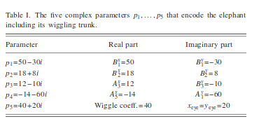
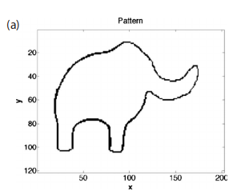
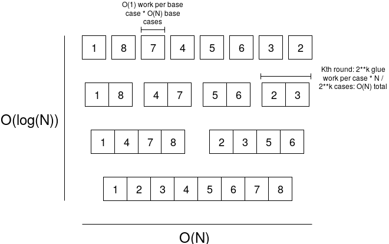
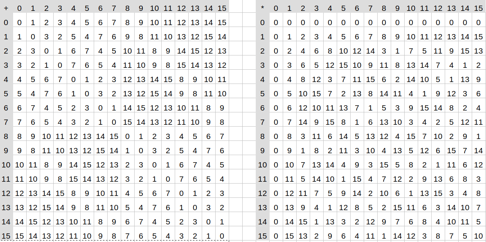
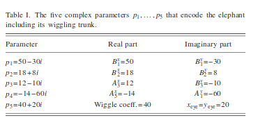

Fast Fourier Transforms
2019 May 12
See all posts
Fast Fourier Transforms
Trigger warning: specialized mathematical topic
Special thanks to Karl Floersch for feedback
One of the more interesting algorithms in number theory is the Fast Fourier transform (FFT). FFTs are a key building block in many algorithms, including extremely fast multiplication of large numbers, multiplication of polynomials, and extremely fast generation and recovery of erasure codes. Erasure codes in particular are highly versatile; in addition to their basic use cases in fault-tolerant data storage and recovery, erasure codes also have more advanced use cases such as securing data availability in scalable blockchains and STARKs. This article will go into what fast Fourier transforms are, and how some of the simpler algorithms for computing them work.
Background
The original Fourier transform is a mathematical operation that is often described as converting data between the "frequency domain" and the "time domain". What this means more precisely is that if you have a piece of data, then running the algorithm would come up with a collection of sine waves with different frequencies and amplitudes that, if you added them together, would approximate the original data. Fourier transforms can be used for such wonderful things as expressing square orbits through epicycles and deriving a set of equations that can draw an elephant:


|

|
Ok fine, Fourier transforms also have really important applications in signal processing, quantum mechanics, and other areas, and help make significant parts of the global economy happen. But come on, elephants are cooler.
Running the Fourier transform algorithm in the "inverse" direction would simply take the sine waves and add them together and compute the resulting values at as many points as you wanted to sample.
The kind of Fourier transform we'll be talking about in this post is a similar algorithm, except instead of being a continuous Fourier transform over real or complex numbers, it's a discrete Fourier transform over finite fields (see the "A Modular Math Interlude" section here for a refresher on what finite fields are). Instead of talking about converting between "frequency domain" and "time domain", here we'll talk about two different operations: multi-point polynomial evaluation (evaluating a degree \(< N\) polynomial at \(N\) different points) and its inverse, polynomial interpolation (given the evaluations of a degree \(< N\) polynomial at \(N\) different points, recovering the polynomial). For example, if we are operating in the prime field with modulus 5, then the polynomial \(y = x² + 3\) (for convenience we can write the coefficients in increasing order: \([3,0,1]\)) evaluated at the points \([0,1,2]\) gives the values \([3,4,2]\) (not \([3, 4, 7]\) because we're operating in a finite field where the numbers wrap around at 5), and we can actually take the evaluations \([3,4,2]\) and the coordinates they were evaluated at (\([0,1,2]\)) to recover the original polynomial \([3,0,1]\).
There are algorithms for both multi-point evaluation and interpolation that can do either operation in \(O(N^2)\) time. Multi-point evaluation is simple: just separately evaluate the polynomial at each point. Here's python code for doing that:
def eval_poly_at(self, poly, x, modulus):
y = 0
power_of_x = 1
for coefficient in poly:
y += power_of_x * coefficient
power_of_x *= x
return y % modulus
The algorithm runs a loop going through every coefficient and does one thing for each coefficient, so it runs in \(O(N)\) time. Multi-point evaluation involves doing this evaluation at \(N\) different points, so the total run time is \(O(N^2)\).
Lagrange interpolation is more complicated (search for "Lagrange interpolation" here for a more detailed explanation). The key building block of the basic strategy is that for any domain \(D\) and point \(x\), we can construct a polynomial that returns \(1\) for \(x\) and \(0\) for any value in \(D\) other than \(x\). For example, if \(D = [1,2,3,4]\) and \(x = 1\), the polynomial is:
\[
y = \frac{(x-2)(x-3)(x-4)}{(1-2)(1-3)(1-4)}
\]
You can mentally plug in \(1\), \(2\), \(3\) and \(4\) to the above expression and verify that it returns \(1\) for \(x= 1\) and \(0\) in the other three cases.
We can recover the polynomial that gives any desired set of outputs on the given domain by multiplying and adding these polynomials. If we call the above polynomial \(P_1\), and the equivalent ones for \(x=2\), \(x=3\), \(x=4\), \(P_2\), \(P_3\) and \(P_4\), then the polynomial that returns \([3,1,4,1]\) on the domain \([1,2,3,4]\) is simply \(3 \cdot P_1 + P_2 + 4 \cdot P_3 + P_4\). Computing the \(P_i\) polynomials takes \(O(N^2)\) time (you first construct the polynomial that returns to 0 on the entire domain, which takes \(O(N^2)\) time, then separately divide it by \((x - x_i)\) for each \(x_i\)), and computing the linear combination takes another \(O(N^2)\) time, so it's \(O(N^2)\) runtime total.
What Fast Fourier transforms let us do, is make both multi-point evaluation and interpolation much faster.
Fast Fourier Transforms
There is a price you have to pay for using this much faster algorithm, which is that you cannot choose any arbitrary field and any arbitrary domain. Whereas with Lagrange interpolation, you could choose whatever x coordinates and y coordinates you wanted, and whatever field you wanted (you could even do it over plain old real numbers), and you could get a polynomial that passes through them., with an FFT, you have to use a finite field, and the domain must be a multiplicative subgroup of the field (that is, a list of powers of some "generator" value). For example, you could use the finite field of integers modulo \(337\), and for the domain use \([1, 85, 148, 111, 336, 252, 189, 226]\) (that's the powers of \(85\) in the field, eg. \(85^3\) % \(337 = 111\); it stops at \(226\) because the next power of \(85\) cycles back to \(1\)). Futhermore, the multiplicative subgroup must have size \(2^n\) (there's ways to make it work for numbers of the form \(2^{m} \cdot 3^n\) and possibly slightly higher prime powers but then it gets much more complicated and inefficient). The finite field of intergers modulo \(59\), for example, would not work, because there are only multiplicative subgroups of order \(2\), \(29\) and \(58\); \(2\) is too small to be interesting, and the factor \(29\) is far too large to be FFT-friendly. The symmetry that comes from multiplicative groups of size \(2^n\) lets us create a recursive algorithm that quite cleverly calculate the results we need from a much smaller amount of work.
To understand the algorithm and why it has a low runtime, it's important to understand the general concept of recursion. A recursive algorithm is an algorithm that has two cases: a "base case" where the input to the algorithm is small enough that you can give the output directly, and the "recursive case" where the required computation consists of some "glue computation" plus one or more uses of the same algorithm to smaller inputs. For example, you might have seen recursive algorithms being used for sorting lists. If you have a list (eg. \([1,8,7,4,5,6,3,2,9]\)), then you can sort it using the following procedure:
-
If the input has one element, then it's already "sorted", so you can just return the input.
-
If the input has more than one element, then separately sort the first half of the list and the second half of the list, and then merge the two sorted sub-lists (call them \(A\) and \(B\)) as follows. Maintain two counters, \(apos\) and \(bpos\), both starting at zero, and maintain an output list, which starts empty. Until either \(apos\) or \(bpos\) is at the end of the corresponding list, check if \(A[apos]\) or \(B[bpos]\) is smaller. Whichever is smaller, add that value to the end of the output list, and increase that counter by \(1\). Once this is done, add the rest of whatever list has not been fully processed to the end of the output list, and return the output list.
Note that the "glue" in the second procedure has runtime \(O(N)\): if each of the two sub-lists has \(N\) elements, then you need to run through every item in each list once, so it's \(O(N)\) computation total. So the algorithm as a whole works by taking a problem of size \(N\), and breaking it up into two problems of size \(\frac{N}{2}\), plus \(O(N)\) of "glue" execution. There is a theorem called the Master Theorem that lets us compute the total runtime of algorithms like this. It has many sub-cases, but in the case where you break up an execution of size \(N\) into \(k\) sub-cases of size \(\frac{N}{k}\) with \(O(N)\) glue (as is the case here), the result is that the execution takes time \(O(N \cdot log(N))\).

An FFT works in the same way. We take a problem of size \(N\), break it up into two problems of size \(\frac{N}{2}\), and do \(O(N)\) glue work to combine the smaller solutions into a bigger solution, so we get \(O(N \cdot log(N))\) runtime total - much faster than \(O(N^2)\). Here is how we do it. I'll describe first how to use an FFT for multi-point evaluation (ie. for some domain \(D\) and polynomial \(P\), calculate \(P(x)\) for every \(x\) in \(D\)), and it turns out that you can use the same algorithm for interpolation with a minor tweak.
Suppose that we have an FFT where the given domain is the powers of \(x\) in some field, where \(x^{2^{k}} = 1\) (eg. in the case we introduced above, the domain is the powers of \(85\) modulo \(337\), and \(85^{2^{3}} = 1\)). We have some polynomial, eg. \(y = 6x^7 + 2x^6 + 9x^5 + 5x^4 + x^3 + 4x^2 + x + 3\) (we'll write it as \(p = [3, 1, 4, 1, 5, 9, 2, 6]\)). We want to evaluate this polynomial at each point in the domain, ie. at each of the eight powers of \(85\). Here is what we do. First, we break up the polynomial into two parts, which we'll call \(evens\) and \(odds\): \(evens = [3, 4, 5, 2]\) and \(odds = [1, 1, 9, 6]\) (or \(evens = 2x^3 + 5x^2 + 4x + 3\) and \(odds = 6x^3 + 9x^2 + x + 1\); yes, this is just taking the even-degree coefficients and the odd-degree coefficients). Now, we note a mathematical observation: \(p(x) = evens(x^2) + x \cdot odds(x^2)\) and \(p(-x) = evens(x^2) - x \cdot odds(x^2)\) (think about this for yourself and make sure you understand it before going further).
Here, we have a nice property: \(evens\) and \(odds\) are both polynomials half the size of \(p\), and furthermore, the set of possible values of \(x^2\) is only half the size of the original domain, because there is a two-to-one correspondence: \(x\) and \(-x\) are both part of \(D\) (eg. in our current domain \([1, 85, 148, 111, 336, 252, 189, 226]\), 1 and 336 are negatives of each other, as \(336 = -1\) % \(337\), as are \((85, 252)\), \((148, 189)\) and \((111, 226)\). And \(x\) and \(-x\) always both have the same square. Hence, we can use an FFT to compute the result of \(evens(x)\) for every \(x\) in the smaller domain consisting of squares of numbers in the original domain (\([1, 148, 336, 189]\)), and we can do the same for odds. And voila, we've reduced a size-\(N\) problem into half-size problems.
The "glue" is relatively easy (and \(O(N)\) in runtime): we receive the evaluations of \(evens\) and \(odds\) as size-\(\frac{N}{2}\) lists, so we simply do \(p[i] = evens\_result[i] + domain[i]\cdot odds\_result[i]\) and \(p[\frac{N}{2} + i] = evens\_result[i] - domain[i]\cdot odds\_result[i]\) for each index \(i\).
Here's the full code:
def fft(vals, modulus, domain):
if len(vals) == 1:
return vals
L = fft(vals[::2], modulus, domain[::2])
R = fft(vals[1::2], modulus, domain[::2])
o = [0 for i in vals]
for i, (x, y) in enumerate(zip(L, R)):
y_times_root = y*domain[i]
o[i] = (x+y_times_root) % modulus
o[i+len(L)] = (x-y_times_root) % modulus
return o
We can try running it:
>>> fft([3,1,4,1,5,9,2,6], 337, [1, 85, 148, 111, 336, 252, 189, 226])
[31, 70, 109, 74, 334, 181, 232, 4]
And we can check the result; evaluating the polynomial at the position \(85\), for example, actually does give the result \(70\). Note that this only works if the domain is "correct"; it needs to be of the form \([x^i\) % \(modulus\) for \(i\) in \(range(n)]\) where \(x^n = 1\).
An inverse FFT is surprisingly simple:
def inverse_fft(vals, modulus, domain):
vals = fft(vals, modulus, domain)
return [x * modular_inverse(len(vals), modulus) % modulus for x in [vals[0]] + vals[1:][::-1]]
Basically, run the FFT again, but reverse the result (except the first item stays in place) and divide every value by the length of the list.
>>> domain = [1, 85, 148, 111, 336, 252, 189, 226]
>>> def modular_inverse(x, n): return pow(x, n - 2, n)
>>> values = fft([3,1,4,1,5,9,2,6], 337, domain)
>>> values
[31, 70, 109, 74, 334, 181, 232, 4]
>>> inverse_fft(values, 337, domain)
[3, 1, 4, 1, 5, 9, 2, 6]
Now, what can we use this for? Here's one fun use case: we can use FFTs to multiply numbers very quickly. Suppose we wanted to multiply \(1253\) by \(1895\). Here is what we would do. First, we would convert the problem into one that turns out to be slightly easier: multiply the polynomials \([3, 5, 2, 1]\) by \([5, 9, 8, 1]\) (that's just the digits of the two numbers in increasing order), and then convert the answer back into a number by doing a single pass to carry over tens digits. We can multiply polynomials with FFTs quickly, because it turns out that if you convert a polynomial into evaluation form (ie. \(f(x)\) for every \(x\) in some domain \(D\)), then you can multiply two polynomials simply by multiplying their evaluations. So what we'll do is take the polynomials representing our two numbers in coefficient form, use FFTs to convert them to evaluation form, multiply them pointwise, and convert back:
>>> p1 = [3,5,2,1,0,0,0,0]
>>> p2 = [5,9,8,1,0,0,0,0]
>>> x1 = fft(p1, 337, domain)
>>> x1
[11, 161, 256, 10, 336, 100, 83, 78]
>>> x2 = fft(p2, 337, domain)
>>> x2
[23, 43, 170, 242, 3, 313, 161, 96]
>>> x3 = [(v1 * v2) % 337 for v1, v2 in zip(x1, x2)]
>>> x3
[253, 183, 47, 61, 334, 296, 220, 74]
>>> inverse_fft(x3, 337, domain)
[15, 52, 79, 66, 30, 10, 1, 0]
This requires three FFTs (each \(O(N \cdot log(N))\) time) and one pointwise multiplication (\(O(N)\) time), so it takes \(O(N \cdot log(N))\) time altogether (technically a little bit more than \(O(N \cdot log(N))\), because for very big numbers you would need replace \(337\) with a bigger modulus and that would make multiplication harder, but close enough). This is much faster than schoolbook multiplication, which takes \(O(N^2)\) time:
3 5 2 1
------------
5 | 15 25 10 5
9 | 27 45 18 9
8 | 24 40 16 8
1 | 3 5 2 1
---------------------
15 52 79 66 30 10 1
So now we just take the result, and carry the tens digits over (this is a "walk through the list once and do one thing at each point" algorithm so it takes \(O(N)\) time):
[15, 52, 79, 66, 30, 10, 1, 0]
[ 5, 53, 79, 66, 30, 10, 1, 0]
[ 5, 3, 84, 66, 30, 10, 1, 0]
[ 5, 3, 4, 74, 30, 10, 1, 0]
[ 5, 3, 4, 4, 37, 10, 1, 0]
[ 5, 3, 4, 4, 7, 13, 1, 0]
[ 5, 3, 4, 4, 7, 3, 2, 0]
And if we read the digits from top to bottom, we get \(2374435\). Let's check the answer....
Yay! It worked. In practice, on such small inputs, the difference between \(O(N \cdot log(N))\) and \(O(N^2)\) isn't that large, so schoolbook multiplication is faster than this FFT-based multiplication process just because the algorithm is simpler, but on large inputs it makes a really big difference.
But FFTs are useful not just for multiplying numbers; as mentioned above, polynomial multiplication and multi-point evaluation are crucially important operations in implementing erasure coding, which is a very important technique for building many kinds of redundant fault-tolerant systems. If you like fault tolerance and you like efficiency, FFTs are your friend.
FFTs and binary fields
Prime fields are not the only kind of finite field out there. Another kind of finite field (really a special case of the more general concept of an extension field, which are kind of like the finite-field equivalent of complex numbers) are binary fields. In an binary field, each element is expressed as a polynomial where all of the entries are \(0\) or \(1\), eg. \(x^3 + x + 1\). Adding polynomials is done modulo \(2\), and subtraction is the same as addition (as \(-1 = 1 \bmod 2\)). We select some irreducible polynomial as a modulus (eg. \(x^4 + x + 1\); \(x^4 + 1\) would not work because \(x^4 + 1\) can be factored into \((x^2 + 1)\cdot(x^2 + 1)\) so it's not "irreducible"); multiplication is done modulo that modulus. For example, in the binary field mod \(x^4 + x + 1\), multiplying \(x^2 + 1\) by \(x^3 + 1\) would give \(x^5 + x^3 + x^2 + 1\) if you just do the multiplication, but \(x^5 + x^3 + x^2 + 1 = (x^4 + x + 1)\cdot x + (x^3 + x + 1)\), so the result is the remainder \(x^3 + x + 1\).
We can express this example as a multiplication table. First multiply \([1, 0, 0, 1]\) (ie. \(x^3 + 1\)) by \([1, 0, 1]\) (ie. \(x^2 + 1\)):
1 0 0 1
--------
1 | 1 0 0 1
0 | 0 0 0 0
1 | 1 0 0 1
------------
1 0 1 1 0 1
The multiplication result contains an \(x^5\) term so we can subtract \((x^4 + x + 1)\cdot x\):
1 0 1 1 0 1
- 1 1 0 0 1 [(x⁴ + x + 1) shifted right by one to reflect being multipled by x]
------------
1 1 0 1 0 0
And we get the result, \([1, 1, 0, 1]\) (or \(x^3 + x + 1\)).

Addition and multiplication tables for the binary field mod \(x^4 + x + 1\). Field elements are expressed as integers converted from binary (eg. \(x^3 + x^2 \rightarrow 1100 \rightarrow 12\))
Binary fields are interesting for two reasons. First of all, if you want to erasure-code binary data, then binary fields are really convenient because \(N\) bytes of data can be directly encoded as a binary field element, and any binary field elements that you generate by performing computations on it will also be \(N\) bytes long. You cannot do this with prime fields because prime fields' size is not exactly a power of two; for example, you could encode every \(2\) bytes as a number from \(0...65536\) in the prime field modulo \(65537\) (which is prime), but if you do an FFT on these values, then the output could contain \(65536\), which cannot be expressed in two bytes. Second, the fact that addition and subtraction become the same operation, and \(1 + 1 = 0\), create some "structure" which leads to some very interesting consequences. One particularly interesting, and useful, oddity of binary fields is the "freshman's dream" theorem: \((x+y)^2 = x^2 + y^2\) (and the same for exponents \(4, 8, 16...\) basically any power of two).
But if you want to use binary fields for erasure coding, and do so efficiently, then you need to be able to do Fast Fourier transforms over binary fields. But then there is a problem: in a binary field, there are no (nontrivial) multiplicative groups of order \(2^n\). This is because the multiplicative groups are all order \(2^n\)-1. For example, in the binary field with modulus \(x^4 + x + 1\), if you start calculating successive powers of \(x+1\), you cycle back to \(1\) after \(\it 15\) steps - not \(16\). The reason is that the total number of elements in the field is \(16\), but one of them is zero, and you're never going to reach zero by multiplying any nonzero value by itself in a field, so the powers of \(x+1\) cycle through every element but zero, so the cycle length is \(15\), not \(16\). So what do we do?
The reason we needed the domain to have the "structure" of a multiplicative group with \(2^n\) elements before is that we needed to reduce the size of the domain by a factor of two by squaring each number in it: the domain \([1, 85, 148, 111, 336, 252, 189, 226]\) gets reduced to \([1, 148, 336, 189]\) because \(1\) is the square of both \(1\) and \(336\), \(148\) is the square of both \(85\) and \(252\), and so forth. But what if in a binary field there's a different way to halve the size of a domain? It turns out that there is: given a domain containing \(2^k\) values, including zero (technically the domain must be a subspace), we can construct a half-sized new domain \(D'\) by taking \(x \cdot (x+k)\) for \(x\) in \(D\) using some specific \(k\) in \(D\). Because the original domain is a subspace, since \(k\) is in the domain, any \(x\) in the domain has a corresponding \(x+k\) also in the domain, and the function \(f(x) = x \cdot (x+k)\) returns the same value for \(x\) and \(x+k\) so we get the same kind of two-to-one correspondence that squaring gives us.
|
\(x\)
|
0
|
1
|
2
|
3
|
4
|
5
|
6
|
7
|
8
|
9
|
10
|
11
|
12
|
13
|
14
|
15
|
|
\(x \cdot (x+1)\)
|
0
|
0
|
6
|
6
|
7
|
7
|
1
|
1
|
4
|
4
|
2
|
2
|
3
|
3
|
5
|
5
|
So now, how do we do an FFT on top of this? We'll use the same trick, converting a problem with an \(N\)-sized polynomial and \(N\)-sized domain into two problems each with an \(\frac{N}{2}\)-sized polynomial and \(\frac{N}{2}\)-sized domain, but this time using different equations. We'll convert a polynomial \(p\) into two polynomials \(evens\) and \(odds\) such that \(p(x) = evens(x \cdot (k-x)) + x \cdot odds(x \cdot (k-x))\). Note that for the \(evens\) and \(odds\) that we find, it will also be true that \(p(x+k) = evens(x \cdot (k-x)) + (x+k) \cdot odds(x \cdot (k-x))\). So we can then recursively do an FFT to \(evens\) and \(odds\) on the reduced domain \([x \cdot (k-x)\) for \(x\) in \(D]\), and then we use these two formulas to get the answers for two "halves" of the domain, one offset by \(k\) from the other.
Converting \(p\) into \(evens\) and \(odds\) as described above turns out to itself be nontrivial. The "naive" algorithm for doing this is itself \(O(N^2)\), but it turns out that in a binary field, we can use the fact that \((x^2-kx)^2 = x^4 - k^2 \cdot x^2\), and more generally \((x^2-kx)^{2^{i}} = x^{2^{i+1}} - k^{2^{i}} \cdot x^{2^{i}}\) , to create yet another recursive algorithm to do this in \(O(N \cdot log(N))\) time.
And if you want to do an inverse FFT, to do interpolation, then you need to run the steps in the algorithm in reverse order. You can find the complete code for doing this here: https://github.com/ethereum/research/tree/master/binary_fft, and a paper with details on more optimal algorithms here: http://www.math.clemson.edu/~sgao/papers/GM10.pdf
So what do we get from all of this complexity? Well, we can try running the implementation, which features both a "naive" \(O(N^2)\) multi-point evaluation and the optimized FFT-based one, and time both. Here are my results:
>>> import binary_fft as b
>>> import time, random
>>> f = b.BinaryField(1033)
>>> poly = [random.randrange(1024) for i in range(1024)]
>>> a = time.time(); x1 = b._simple_ft(f, poly); time.time() - a
0.5752472877502441
>>> a = time.time(); x2 = b.fft(f, poly, list(range(1024))); time.time() - a
0.03820443153381348
And as the size of the polynomial gets larger, the naive implementation (_simple_ft) gets slower much more quickly than the FFT:
>>> f = b.BinaryField(2053)
>>> poly = [random.randrange(2048) for i in range(2048)]
>>> a = time.time(); x1 = b._simple_ft(f, poly); time.time() - a
2.2243144512176514
>>> a = time.time(); x2 = b.fft(f, poly, list(range(2048))); time.time() - a
0.07896280288696289
And voila, we have an efficient, scalable way to multi-point evaluate and interpolate polynomials. If we want to use FFTs to recover erasure-coded data where we are missing some pieces, then algorithms for this also exist, though they are somewhat less efficient than just doing a single FFT. Enjoy!
Fast Fourier Transforms
2019 May 12 See all postsTrigger warning: specialized mathematical topic
Special thanks to Karl Floersch for feedback
One of the more interesting algorithms in number theory is the Fast Fourier transform (FFT). FFTs are a key building block in many algorithms, including extremely fast multiplication of large numbers, multiplication of polynomials, and extremely fast generation and recovery of erasure codes. Erasure codes in particular are highly versatile; in addition to their basic use cases in fault-tolerant data storage and recovery, erasure codes also have more advanced use cases such as securing data availability in scalable blockchains and STARKs. This article will go into what fast Fourier transforms are, and how some of the simpler algorithms for computing them work.
Background
The original Fourier transform is a mathematical operation that is often described as converting data between the "frequency domain" and the "time domain". What this means more precisely is that if you have a piece of data, then running the algorithm would come up with a collection of sine waves with different frequencies and amplitudes that, if you added them together, would approximate the original data. Fourier transforms can be used for such wonderful things as expressing square orbits through epicycles and deriving a set of equations that can draw an elephant:

Ok fine, Fourier transforms also have really important applications in signal processing, quantum mechanics, and other areas, and help make significant parts of the global economy happen. But come on, elephants are cooler.
Running the Fourier transform algorithm in the "inverse" direction would simply take the sine waves and add them together and compute the resulting values at as many points as you wanted to sample.
The kind of Fourier transform we'll be talking about in this post is a similar algorithm, except instead of being a continuous Fourier transform over real or complex numbers, it's a discrete Fourier transform over finite fields (see the "A Modular Math Interlude" section here for a refresher on what finite fields are). Instead of talking about converting between "frequency domain" and "time domain", here we'll talk about two different operations: multi-point polynomial evaluation (evaluating a degree \(< N\) polynomial at \(N\) different points) and its inverse, polynomial interpolation (given the evaluations of a degree \(< N\) polynomial at \(N\) different points, recovering the polynomial). For example, if we are operating in the prime field with modulus 5, then the polynomial \(y = x² + 3\) (for convenience we can write the coefficients in increasing order: \([3,0,1]\)) evaluated at the points \([0,1,2]\) gives the values \([3,4,2]\) (not \([3, 4, 7]\) because we're operating in a finite field where the numbers wrap around at 5), and we can actually take the evaluations \([3,4,2]\) and the coordinates they were evaluated at (\([0,1,2]\)) to recover the original polynomial \([3,0,1]\).
There are algorithms for both multi-point evaluation and interpolation that can do either operation in \(O(N^2)\) time. Multi-point evaluation is simple: just separately evaluate the polynomial at each point. Here's python code for doing that:
The algorithm runs a loop going through every coefficient and does one thing for each coefficient, so it runs in \(O(N)\) time. Multi-point evaluation involves doing this evaluation at \(N\) different points, so the total run time is \(O(N^2)\).
Lagrange interpolation is more complicated (search for "Lagrange interpolation" here for a more detailed explanation). The key building block of the basic strategy is that for any domain \(D\) and point \(x\), we can construct a polynomial that returns \(1\) for \(x\) and \(0\) for any value in \(D\) other than \(x\). For example, if \(D = [1,2,3,4]\) and \(x = 1\), the polynomial is:
\[ y = \frac{(x-2)(x-3)(x-4)}{(1-2)(1-3)(1-4)} \]
You can mentally plug in \(1\), \(2\), \(3\) and \(4\) to the above expression and verify that it returns \(1\) for \(x= 1\) and \(0\) in the other three cases.
We can recover the polynomial that gives any desired set of outputs on the given domain by multiplying and adding these polynomials. If we call the above polynomial \(P_1\), and the equivalent ones for \(x=2\), \(x=3\), \(x=4\), \(P_2\), \(P_3\) and \(P_4\), then the polynomial that returns \([3,1,4,1]\) on the domain \([1,2,3,4]\) is simply \(3 \cdot P_1 + P_2 + 4 \cdot P_3 + P_4\). Computing the \(P_i\) polynomials takes \(O(N^2)\) time (you first construct the polynomial that returns to 0 on the entire domain, which takes \(O(N^2)\) time, then separately divide it by \((x - x_i)\) for each \(x_i\)), and computing the linear combination takes another \(O(N^2)\) time, so it's \(O(N^2)\) runtime total.
What Fast Fourier transforms let us do, is make both multi-point evaluation and interpolation much faster.
Fast Fourier Transforms
There is a price you have to pay for using this much faster algorithm, which is that you cannot choose any arbitrary field and any arbitrary domain. Whereas with Lagrange interpolation, you could choose whatever x coordinates and y coordinates you wanted, and whatever field you wanted (you could even do it over plain old real numbers), and you could get a polynomial that passes through them., with an FFT, you have to use a finite field, and the domain must be a multiplicative subgroup of the field (that is, a list of powers of some "generator" value). For example, you could use the finite field of integers modulo \(337\), and for the domain use \([1, 85, 148, 111, 336, 252, 189, 226]\) (that's the powers of \(85\) in the field, eg. \(85^3\) % \(337 = 111\); it stops at \(226\) because the next power of \(85\) cycles back to \(1\)). Futhermore, the multiplicative subgroup must have size \(2^n\) (there's ways to make it work for numbers of the form \(2^{m} \cdot 3^n\) and possibly slightly higher prime powers but then it gets much more complicated and inefficient). The finite field of intergers modulo \(59\), for example, would not work, because there are only multiplicative subgroups of order \(2\), \(29\) and \(58\); \(2\) is too small to be interesting, and the factor \(29\) is far too large to be FFT-friendly. The symmetry that comes from multiplicative groups of size \(2^n\) lets us create a recursive algorithm that quite cleverly calculate the results we need from a much smaller amount of work.
To understand the algorithm and why it has a low runtime, it's important to understand the general concept of recursion. A recursive algorithm is an algorithm that has two cases: a "base case" where the input to the algorithm is small enough that you can give the output directly, and the "recursive case" where the required computation consists of some "glue computation" plus one or more uses of the same algorithm to smaller inputs. For example, you might have seen recursive algorithms being used for sorting lists. If you have a list (eg. \([1,8,7,4,5,6,3,2,9]\)), then you can sort it using the following procedure:
Note that the "glue" in the second procedure has runtime \(O(N)\): if each of the two sub-lists has \(N\) elements, then you need to run through every item in each list once, so it's \(O(N)\) computation total. So the algorithm as a whole works by taking a problem of size \(N\), and breaking it up into two problems of size \(\frac{N}{2}\), plus \(O(N)\) of "glue" execution. There is a theorem called the Master Theorem that lets us compute the total runtime of algorithms like this. It has many sub-cases, but in the case where you break up an execution of size \(N\) into \(k\) sub-cases of size \(\frac{N}{k}\) with \(O(N)\) glue (as is the case here), the result is that the execution takes time \(O(N \cdot log(N))\).
An FFT works in the same way. We take a problem of size \(N\), break it up into two problems of size \(\frac{N}{2}\), and do \(O(N)\) glue work to combine the smaller solutions into a bigger solution, so we get \(O(N \cdot log(N))\) runtime total - much faster than \(O(N^2)\). Here is how we do it. I'll describe first how to use an FFT for multi-point evaluation (ie. for some domain \(D\) and polynomial \(P\), calculate \(P(x)\) for every \(x\) in \(D\)), and it turns out that you can use the same algorithm for interpolation with a minor tweak.
Suppose that we have an FFT where the given domain is the powers of \(x\) in some field, where \(x^{2^{k}} = 1\) (eg. in the case we introduced above, the domain is the powers of \(85\) modulo \(337\), and \(85^{2^{3}} = 1\)). We have some polynomial, eg. \(y = 6x^7 + 2x^6 + 9x^5 + 5x^4 + x^3 + 4x^2 + x + 3\) (we'll write it as \(p = [3, 1, 4, 1, 5, 9, 2, 6]\)). We want to evaluate this polynomial at each point in the domain, ie. at each of the eight powers of \(85\). Here is what we do. First, we break up the polynomial into two parts, which we'll call \(evens\) and \(odds\): \(evens = [3, 4, 5, 2]\) and \(odds = [1, 1, 9, 6]\) (or \(evens = 2x^3 + 5x^2 + 4x + 3\) and \(odds = 6x^3 + 9x^2 + x + 1\); yes, this is just taking the even-degree coefficients and the odd-degree coefficients). Now, we note a mathematical observation: \(p(x) = evens(x^2) + x \cdot odds(x^2)\) and \(p(-x) = evens(x^2) - x \cdot odds(x^2)\) (think about this for yourself and make sure you understand it before going further).
Here, we have a nice property: \(evens\) and \(odds\) are both polynomials half the size of \(p\), and furthermore, the set of possible values of \(x^2\) is only half the size of the original domain, because there is a two-to-one correspondence: \(x\) and \(-x\) are both part of \(D\) (eg. in our current domain \([1, 85, 148, 111, 336, 252, 189, 226]\), 1 and 336 are negatives of each other, as \(336 = -1\) % \(337\), as are \((85, 252)\), \((148, 189)\) and \((111, 226)\). And \(x\) and \(-x\) always both have the same square. Hence, we can use an FFT to compute the result of \(evens(x)\) for every \(x\) in the smaller domain consisting of squares of numbers in the original domain (\([1, 148, 336, 189]\)), and we can do the same for odds. And voila, we've reduced a size-\(N\) problem into half-size problems.
The "glue" is relatively easy (and \(O(N)\) in runtime): we receive the evaluations of \(evens\) and \(odds\) as size-\(\frac{N}{2}\) lists, so we simply do \(p[i] = evens\_result[i] + domain[i]\cdot odds\_result[i]\) and \(p[\frac{N}{2} + i] = evens\_result[i] - domain[i]\cdot odds\_result[i]\) for each index \(i\).
Here's the full code:
We can try running it:
And we can check the result; evaluating the polynomial at the position \(85\), for example, actually does give the result \(70\). Note that this only works if the domain is "correct"; it needs to be of the form \([x^i\) % \(modulus\) for \(i\) in \(range(n)]\) where \(x^n = 1\).
An inverse FFT is surprisingly simple:
Basically, run the FFT again, but reverse the result (except the first item stays in place) and divide every value by the length of the list.
Now, what can we use this for? Here's one fun use case: we can use FFTs to multiply numbers very quickly. Suppose we wanted to multiply \(1253\) by \(1895\). Here is what we would do. First, we would convert the problem into one that turns out to be slightly easier: multiply the polynomials \([3, 5, 2, 1]\) by \([5, 9, 8, 1]\) (that's just the digits of the two numbers in increasing order), and then convert the answer back into a number by doing a single pass to carry over tens digits. We can multiply polynomials with FFTs quickly, because it turns out that if you convert a polynomial into evaluation form (ie. \(f(x)\) for every \(x\) in some domain \(D\)), then you can multiply two polynomials simply by multiplying their evaluations. So what we'll do is take the polynomials representing our two numbers in coefficient form, use FFTs to convert them to evaluation form, multiply them pointwise, and convert back:
This requires three FFTs (each \(O(N \cdot log(N))\) time) and one pointwise multiplication (\(O(N)\) time), so it takes \(O(N \cdot log(N))\) time altogether (technically a little bit more than \(O(N \cdot log(N))\), because for very big numbers you would need replace \(337\) with a bigger modulus and that would make multiplication harder, but close enough). This is much faster than schoolbook multiplication, which takes \(O(N^2)\) time:
3 5 2 1 ------------ 5 | 15 25 10 5 9 | 27 45 18 9 8 | 24 40 16 8 1 | 3 5 2 1 --------------------- 15 52 79 66 30 10 1So now we just take the result, and carry the tens digits over (this is a "walk through the list once and do one thing at each point" algorithm so it takes \(O(N)\) time):
And if we read the digits from top to bottom, we get \(2374435\). Let's check the answer....
Yay! It worked. In practice, on such small inputs, the difference between \(O(N \cdot log(N))\) and \(O(N^2)\) isn't that large, so schoolbook multiplication is faster than this FFT-based multiplication process just because the algorithm is simpler, but on large inputs it makes a really big difference.
But FFTs are useful not just for multiplying numbers; as mentioned above, polynomial multiplication and multi-point evaluation are crucially important operations in implementing erasure coding, which is a very important technique for building many kinds of redundant fault-tolerant systems. If you like fault tolerance and you like efficiency, FFTs are your friend.
FFTs and binary fields
Prime fields are not the only kind of finite field out there. Another kind of finite field (really a special case of the more general concept of an extension field, which are kind of like the finite-field equivalent of complex numbers) are binary fields. In an binary field, each element is expressed as a polynomial where all of the entries are \(0\) or \(1\), eg. \(x^3 + x + 1\). Adding polynomials is done modulo \(2\), and subtraction is the same as addition (as \(-1 = 1 \bmod 2\)). We select some irreducible polynomial as a modulus (eg. \(x^4 + x + 1\); \(x^4 + 1\) would not work because \(x^4 + 1\) can be factored into \((x^2 + 1)\cdot(x^2 + 1)\) so it's not "irreducible"); multiplication is done modulo that modulus. For example, in the binary field mod \(x^4 + x + 1\), multiplying \(x^2 + 1\) by \(x^3 + 1\) would give \(x^5 + x^3 + x^2 + 1\) if you just do the multiplication, but \(x^5 + x^3 + x^2 + 1 = (x^4 + x + 1)\cdot x + (x^3 + x + 1)\), so the result is the remainder \(x^3 + x + 1\).
We can express this example as a multiplication table. First multiply \([1, 0, 0, 1]\) (ie. \(x^3 + 1\)) by \([1, 0, 1]\) (ie. \(x^2 + 1\)):
1 0 0 1 -------- 1 | 1 0 0 1 0 | 0 0 0 0 1 | 1 0 0 1 ------------ 1 0 1 1 0 1The multiplication result contains an \(x^5\) term so we can subtract \((x^4 + x + 1)\cdot x\):
1 0 1 1 0 1 - 1 1 0 0 1 [(x⁴ + x + 1) shifted right by one to reflect being multipled by x] ------------ 1 1 0 1 0 0And we get the result, \([1, 1, 0, 1]\) (or \(x^3 + x + 1\)).
Addition and multiplication tables for the binary field mod \(x^4 + x + 1\). Field elements are expressed as integers converted from binary (eg. \(x^3 + x^2 \rightarrow 1100 \rightarrow 12\))
Binary fields are interesting for two reasons. First of all, if you want to erasure-code binary data, then binary fields are really convenient because \(N\) bytes of data can be directly encoded as a binary field element, and any binary field elements that you generate by performing computations on it will also be \(N\) bytes long. You cannot do this with prime fields because prime fields' size is not exactly a power of two; for example, you could encode every \(2\) bytes as a number from \(0...65536\) in the prime field modulo \(65537\) (which is prime), but if you do an FFT on these values, then the output could contain \(65536\), which cannot be expressed in two bytes. Second, the fact that addition and subtraction become the same operation, and \(1 + 1 = 0\), create some "structure" which leads to some very interesting consequences. One particularly interesting, and useful, oddity of binary fields is the "freshman's dream" theorem: \((x+y)^2 = x^2 + y^2\) (and the same for exponents \(4, 8, 16...\) basically any power of two).
But if you want to use binary fields for erasure coding, and do so efficiently, then you need to be able to do Fast Fourier transforms over binary fields. But then there is a problem: in a binary field, there are no (nontrivial) multiplicative groups of order \(2^n\). This is because the multiplicative groups are all order \(2^n\)-1. For example, in the binary field with modulus \(x^4 + x + 1\), if you start calculating successive powers of \(x+1\), you cycle back to \(1\) after \(\it 15\) steps - not \(16\). The reason is that the total number of elements in the field is \(16\), but one of them is zero, and you're never going to reach zero by multiplying any nonzero value by itself in a field, so the powers of \(x+1\) cycle through every element but zero, so the cycle length is \(15\), not \(16\). So what do we do?
The reason we needed the domain to have the "structure" of a multiplicative group with \(2^n\) elements before is that we needed to reduce the size of the domain by a factor of two by squaring each number in it: the domain \([1, 85, 148, 111, 336, 252, 189, 226]\) gets reduced to \([1, 148, 336, 189]\) because \(1\) is the square of both \(1\) and \(336\), \(148\) is the square of both \(85\) and \(252\), and so forth. But what if in a binary field there's a different way to halve the size of a domain? It turns out that there is: given a domain containing \(2^k\) values, including zero (technically the domain must be a subspace), we can construct a half-sized new domain \(D'\) by taking \(x \cdot (x+k)\) for \(x\) in \(D\) using some specific \(k\) in \(D\). Because the original domain is a subspace, since \(k\) is in the domain, any \(x\) in the domain has a corresponding \(x+k\) also in the domain, and the function \(f(x) = x \cdot (x+k)\) returns the same value for \(x\) and \(x+k\) so we get the same kind of two-to-one correspondence that squaring gives us.
So now, how do we do an FFT on top of this? We'll use the same trick, converting a problem with an \(N\)-sized polynomial and \(N\)-sized domain into two problems each with an \(\frac{N}{2}\)-sized polynomial and \(\frac{N}{2}\)-sized domain, but this time using different equations. We'll convert a polynomial \(p\) into two polynomials \(evens\) and \(odds\) such that \(p(x) = evens(x \cdot (k-x)) + x \cdot odds(x \cdot (k-x))\). Note that for the \(evens\) and \(odds\) that we find, it will also be true that \(p(x+k) = evens(x \cdot (k-x)) + (x+k) \cdot odds(x \cdot (k-x))\). So we can then recursively do an FFT to \(evens\) and \(odds\) on the reduced domain \([x \cdot (k-x)\) for \(x\) in \(D]\), and then we use these two formulas to get the answers for two "halves" of the domain, one offset by \(k\) from the other.
Converting \(p\) into \(evens\) and \(odds\) as described above turns out to itself be nontrivial. The "naive" algorithm for doing this is itself \(O(N^2)\), but it turns out that in a binary field, we can use the fact that \((x^2-kx)^2 = x^4 - k^2 \cdot x^2\), and more generally \((x^2-kx)^{2^{i}} = x^{2^{i+1}} - k^{2^{i}} \cdot x^{2^{i}}\) , to create yet another recursive algorithm to do this in \(O(N \cdot log(N))\) time.
And if you want to do an inverse FFT, to do interpolation, then you need to run the steps in the algorithm in reverse order. You can find the complete code for doing this here: https://github.com/ethereum/research/tree/master/binary_fft, and a paper with details on more optimal algorithms here: http://www.math.clemson.edu/~sgao/papers/GM10.pdf
So what do we get from all of this complexity? Well, we can try running the implementation, which features both a "naive" \(O(N^2)\) multi-point evaluation and the optimized FFT-based one, and time both. Here are my results:
And as the size of the polynomial gets larger, the naive implementation (
_simple_ft) gets slower much more quickly than the FFT:And voila, we have an efficient, scalable way to multi-point evaluate and interpolate polynomials. If we want to use FFTs to recover erasure-coded data where we are missing some pieces, then algorithms for this also exist, though they are somewhat less efficient than just doing a single FFT. Enjoy!